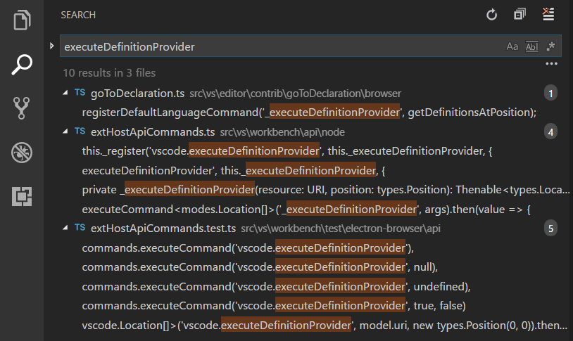
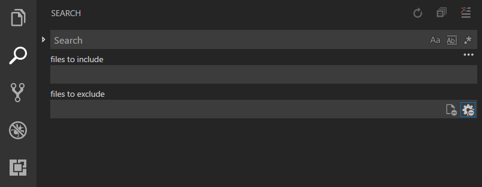
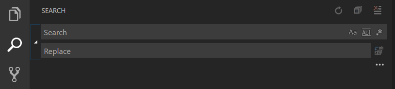
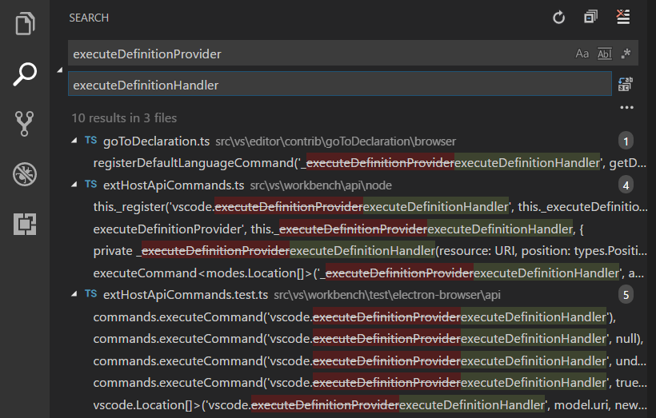

Visual Studio Codeとは何よりもまずエディターであり、生産的なソースコード編集に必要な機能を含んでいます。このトピックではエディターの基本を紹介します。コードの編集に役立ててください。
キーボードショートカット
高い生産性のために、コードを書いている途中でもキーボード上に手を置き続けられることは重要なことです。VS Codeにはデフォルトのキーボードショートカットが豊富に用意されているのはもちろん、それをカスタマイズすることもできます。
- Keyboard Shortcuts Reference - Reference Sheetをダウンロードして、よく使用される一般的なキーバインドショートカットを確認します。
- Install a Keymap extension - キーマップの拡張機能をインストールして、使い慣れたエディター(Sublime Text、Atom、Vimなど)のキーボードショートカットVS Codeで使用します。
- Customize Keyboard Shortcuts - 好みに合わせてキーボードショートカットショートカットを変更します。
複数の選択範囲 (マルチカーソル)
VS Codeは高度な連立の編集ができるように、マルチカーソルをサポートしています。Alt+Clickを使用して2個目のカーソル(薄く表示)を追加することができます。各カーソルは、それがおかれているコンテキストに基づいて独立的に動作します。追加のカーソルを追加するのによく使う方法は、⌥⌘↓ (Windows Ctrl+Alt+Down, Linux Shift+Alt+Down)(下に挿入)や⌥⌘↑ (Windows Ctrl+Alt+Up, Linux Shift+Alt+Up)(上に挿入)です。
Note: ビデオカードのドライバー(例: NVIDIA)がこれら既定のショートカットを上書きすることがあります。

⌘D (Windows, Linux Ctrl+D)はカーソルの単語または次の出現箇所を選択します。

Tip: また、追加のカーソルを⇧⌘L (Windows, Linux Ctrl+Shift+L)を使用することでも追加できます。これは現在選択しているテキストの出現個所のそれぞれに選択範囲を追加します。
選択範囲の縮小/拡大
現在の選択範囲をすばやく縮小または拡大できます。⌃⇧⌘← (Windows, Linux Shift+Alt+Left)と⌃⇧⌘→ (Windows, Linux Shift+Alt+Right)でこれを実行できます。
次に⌃⇧⌘→ (Windows, Linux Shift+Alt+Right)を使用して選択範囲を拡大する例を示します:

列 (短形) の選択
行選択をするにはShiftとAltを押しながらドラッグします:
MacとWindowsには行選択のための既定のキーバインドがありますが、Linuxにはありません。
| Key | Command | Command id |
|---|---|---|
| ⇧⌥⌘↓ (Windows Ctrl+Shift+Alt+Down, Linux ) | 下に短形選択 | cursorColumnSelectDown |
| ⇧⌥⌘↑ (Windows Ctrl+Shift+Alt+Up, Linux ) | 上に短形選択 | cursorColumnSelectUp |
| ⇧⌥⌘← (Windows Ctrl+Shift+Alt+Left, Linux ) | 左に短形選択 | cursorColumnSelectLeft |
| ⇧⌥⌘→ (Windows Ctrl+Shift+Alt+Right, Linux ) | 右に短形選択 | cursorColumnSelectRight |
| ⇧⌥⌘PageDown (Windows Ctrl+Shift+Alt+PageDown, Linux ) | ページ ダウン 短形選択 | cursorColumnSelectPageDown |
| ⇧⌥⌘PageUp (Windows Ctrl+Shift+Alt+PageUp, Linux ) | ページ アップ 短形選択 | cursorColumnSelectPageUp |
必要に応じて、keybindings.jsonを編集してより親しみやすいものに設定することができます。
保存/自動保存
既定では、VS Codeはディスクへ変更書き込むに操作(⌘S (Windows, Linux Ctrl+S))が必要です。
ですが問題ありません。Auto Saveを有効にするのはとても簡単です。これは設定した遅延タイミングやエディターからフォーカスを離したときに変更を保存します。このオプションを有効化するとファイルを保存するのに操作が必要ありません。Auto Saveを有効にする最も簡単な方法は、ファイル>自動保存で切り替えてオンまたはオフにすることです。
自動保存をより制御するには、ユーザーかワークスペース設定を開いて次の関連する設定を見つけてください:
files.autoSave: 次の値をとります。off- 自動保存を無効にします。afterDelay- 設定した遅延でファイルを保存します。onFocusChange-フォーカスがダーティーファイルのエディターから移動したときにファイルを保存します。onWindowChange- フォーカスがVS Codeから移動したときにファイルを保存します。
files.autoSaveDelay:files.autoSaveがafterDelayに設定されているときにミリ秒で遅延を構成します。
Hot Exit
既定でVS Codeは、編集を終了するときに保存していない変更を記憶します。Hot Exitは、アプリケーションがファイル>終了(Code>Quit)によって閉じたときか、最後のウィンドウが閉じられたときに実行されます。
files.hotExit設定に次の値を設定してHot Exitを構成できます:
"off": Hot Exitを無効にします。"onExit": アプリケーションを閉じた(Windows/Linux上で最後のウィンドウを閉じた)とき、またはworkbench.action.quitコマンドを(コマンドパレット、ショートカット、メニューから)実行したときにHot Exitを実行します。バックアップしてあるすべてのウィンドウは、次回の起動時に復元されます。"onExit": アプリケーションを閉じた(Windows/Linux上で最後のウィンドウを閉じた)とき、またはworkbench.action.quitコマンドを(コマンドパレット、ショートカット、メニューから)実行したときにHot Exitを実行します。また最後のウィンドウであるかどうかにかかわらず、フォルダーを開いている任意のウィンドウを閉じたときもこれを実行します。フォルダーを開いていないすべてのウィンドウは、次回の再起動時に復元されます。閉じるまえのフォルダーのウィンドウを復元するにはwindow.reopenFoldersをallに設定します。
ファイル間の検索
VS Codeでは、現在開いているフォルダー内すべてのファイルを素早く検索することができます。⇧⌘F (Windows, Linux Ctrl+Shift+F)を押して、検索文字を入力します。検索結果は、検索文字を含むファイルごとにグループ分けされ、各ファイルのヒット数とその場所を表示します。ファイル内すべてのヒット項目をプレビューするには、ファイルを展開してください。次にヒット項目の1つをシングルクリックして、エディターでそれを表示します。

Tip: 検索窓では正規表現による検索をサポートしています。
⇧⌘J (Windows, Linux Ctrl+Shift+J)を入力することで、高度な検索オプションを構成できます。これにより、検索を構成する追加のフィードを表示します。

検索ボックスの下にある2つの入力ボックスで、ファイルを含めるか除外するるかを指定できます。globパターンの構文を有効にするには、右のトグルをクリックしてください:
*はパスセグメントで1個以上の文字と一致します?**` はパスセグメントで1個の文字と一致します**はnoneを含む任意の数のパスセグメントに一致します{}は条件をグループ化します (例:{**/*.html,**/*.txt}すべてのHTMLとテキストファイルに一致します)[]は一致する文字の範囲を宣言します (例:example.[0-9]はexample.0,example.1, … に一致します)
既定でVS Codeはいくつかのフォルダーを除外して、興味のない検索結果の数を減らします(例: node_modules)。これらのルールを変更するには設定を開いて、files.excludeとsearch.excludeセクションを変更します。
Tip: エクスプローラーからフォルダーを右クリックして、フォルダー内を検索を選択するとフォルダー内のみを検索します。
また、ファイル間で検索と置換を行うこともできます。検索ウィジェットを展開して、置換テキストボックスを表示します。

置換テキストボックスにテキストを入力するとき、保留中の変更の差分を表示します。置換テキストボックスからファイル間すべてを置き換えたり、1つのファイル内をすべて置換したり、1つの変更を置き換えたりすることができます。

Tip: ⌥↓ (Windows, Linux Alt+Down)と⌥↑ (Windows, Linux Alt+Up) を使用して検索文字の履歴を移動することで、素早く以前の検索文字を再利用できます。
IntelliSense
JavaScript、JSON、HTML、CSS、Less、Sass、C#、TypeScriptのとき真のIntelliSense体験を提供します。これらRich Languagesでなくとも、私たちは常に単語による補完を提供しています。もし言語サービスが候補を提案できる状態にあれば、入力時にIntelliSenseは候補をポップアップ表示します。これを⌃Space (Windows, Linux Ctrl+Space)でいつでも手動で起動することができます。既定でTabやEnterはキーボードのトリガーをうけつけますが、これらのキーバインドをカスタマイズすることもできます。
Tip: 提案に対するフィルタはCamelCaseサポートしています。メソッド名に大文字を入力するだけで、項目を限定することができます。たとえば”createApplication”を表示するときは”cra”ですぐに表示可能です。
Tip: IntelliSenseの提案は
editor.quickSuggestionsとeditor.suggestOnTriggerCharacters設定を通して構成できます。
JavaScriptとTypeScriptの開発者は、npmjsの型定義(typings)ファイルリポジトリーの利点を、一般的なJavaScriptライブラリー(Node.js、React、Angular)に対するIntelliSenseを手に入れることで得ることができます。JavaScriptトピックとNode.jsトライアルで、型定義ファイルを使用する方法について確認できます。
詳細はIntelliSenseドキュメントを参照してください。
フォーマット
VS Codeではソースコードのフォーマットに対する十分なサポートを用意しています。エディターには2つのはっきりしたフォーマット操作があります:
- Format Document (⇧⌥F (Windows Shift+Alt+F, Linux Ctrl+Shift+I)) - アクティなファイル全体をフォーマットします。
- Format Selection (⌘K ⌘F (Windows, Linux Ctrl+K Ctrl+F)) - 選択したテキストをフォーマットします。
これらをコマンドパレット (⇧⌘P (Windows, Linux Ctrl+Shift+P))か、エディターのコンテキストメニューから呼びだすことができます。
VS CodeにはJavaScript、TypeScript、JSON、HTML用の既定のフォーマッターがあります。各言語にはユーザーやワークスペース設定で好みに応じたフォーマットオプションがあります(例: html.format.indentInnerHtml)。また、同じ言語のフォーマットを提供する別の拡張機能がインストールされている場合は、既定のフォーマットを無効にすることもできます。
|
手動でコードのフォーマットを呼びだすのと一緒に、入力、保存、貼り付けなどのユーザー操作によってフォーマットをトリガーすることもできます。これらは既定でオフになっていますが、次の設定を通して有効にすることができます:
editor.formatOnType- 入力後に行をフォーマットします。editor.formatOnSave- 保存時にファイルをフォーマットします。editor.formatOnPaste- 貼り付けた内容をフォーマットします。
Note: すべてのフォーマッターが貼り付け時のフォーマットをサポートしているわけではありません。これにはフォーマッターが選択範囲やテキストの範囲のフォーマットをサポートしている必要があります。
既定のフォーマッターに加えMarketplace上に、他の言語やフォーマットツールをサポートする拡張機能を見つけることができます。Formattersカテゴリーがありますから、簡単に検索してformatting extensionsを見つけることができます。拡張機能ビューの検索ボックスで、’formatters’や’category:formatters’を入力してVS Code内でフィルター済みの拡張機能リストを確認できます。
折りたたみ
ガター上の行番号と行の開始の間にある折りたたみアイコンを使用して、ソースコードの領域を折りたたむことができます。マウスをガター上に動かして、領域の展開と折りたたみます。折りたたみの領域は、行のインデントに基づいて評価されます。折りたたみ領域は、1つ以上の次の行よりインデントが小さい場合に開始して、インデントが同じかこれより小さいときに終了します。
次の操作でも使用できます:
- Fold (⌥⌘[ (Windows, Linux Ctrl+Shift+[)) カーソルの位置で最も内側の非折りたたみ領域を折りたたみます
- Unfold (⌥⌘] (Windows, Linux Ctrl+Shift+])) カーソルの位置で折りたたみ領域を展開します
- Fold All (⌘K ⌘0 (Windows, Linux Ctrl+K Ctrl+0)) エディター内のすべての領域を折りたたみます
- Unfold All (⌘K ⌘J (Windows, Linux Ctrl+K Ctrl+J)) エディター内のすべての領域を展開します
- Fold Level X (⌘K ⌘2 (Windows, Linux Ctrl+K Ctrl+2) for level 2) カーソルの位置の領域を除いて、レベルXですべての領域を折りたたみます

文字エンコードのサポート
ユーザー設定またはワークスペース設定のfiles.encoding設定を使用して、グローバルまたはワークスペースごとにファイルエンコーディングを設定します。

ステータスバーでファイルのエンコードを表示します。

ステータスバーのエンコードボタンをクリックすると、アクティブなファイルを別のエンコードで開きなおすか保存します。

次にエンコードを選択します。

次のステップ
VS Codeの多くの内ユーザインターフェイスの基礎を確認しました。次を見てください:
- Intro Video - Setup and Basics - Watch a tutorial on the basics of VS Code.
- User/Workspace Settings - Learn how to configure VS Code to your preferences through user and workspace settings.
- Code Navigation - Peek and Goto Definition, and more
- Integrated Terminal - Learn about the integrated terminal for quickly performing command line tasks from within VS Code.
- IntelliSense - VS Code brings smart code completions.
- Debugging - This is where VS Code really shines
よくある質問
Q: グローバルに検索して置換することは可能ですか？
A: はい可能です。検索ビューのテキストボックスを展開して置換テキストのフィールドを表示してください。ワークスペース内のすべてのファイル間を検索して置き換えることができます。VS Codeのフォルダーを開いていなかった場合は、現在開いているファイルに対してのみに機能することに注意してください。
Q: 文字の折り返しを有効にするにはどうすればいいですか？
A: editor.wordWrap 設定を通して文字の折り返しを制御できます。既定でeditor.wordwrapはoffですが、onに設定するとテキストはエディターのビューポート幅で折り返します。
|
⌥Z (Windows, Linux Alt+Z)を使用して、VS Codeセクションの文字の折り返しを切り替えることができます。VS Codeを再起動すると、永続化したeditor.wordwrap値が取得されます。
editor.rulers設定を利用して、垂直カラムのルーラーをエディターに追加することもできます。
Q: 開いているエディターのセクションにもっと多くのファイルを表示するにはどうすればいいですか？
A: 設定を通して開いているエディターの外見を構成できます。たとえば、マウスホバーせずに表示するファイルの最大数をexplorer.openEditors.visible設定を介して設定したり、開いているエディターセクションの高さを動的に変えるかどうかをexplorer.openEditors.dynamicHeightを介して設定したりできます。